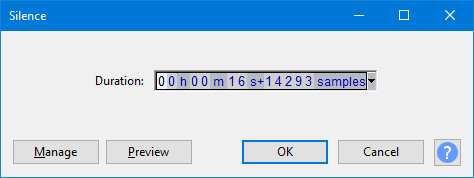

Silence
Silence generates audio of zero amplitude; that is, silence. The only configurable setting being duration.
When applied to an audio selection, the result is identical to .
- Accessed by:
- 
- The image above illustrates replacing a selection region with generated audio.
{kind=link}
Duration
Type (or use the keyboard arrows) to enter the required Duration. If the first digit you want is highlighted, just type the whole number. If the required first digit is not highlighted, use Left or Right arrow on your keyboard to move to the first digit, then type. You can also increment a highlighted digit with keyboard Up or Down arrow instead of typing.
- When generating at the cursor, Duration initializes to 30.000 seconds (except for the DTMF generator which defaults to 1.000 second). However, your last entered Duration is always remembered.
- When replacing a selection region, Duration always displays the exact duration of that selection to the nearest audio sample.
The command buttons
Clicking on the command buttons give the following results:
- gives a dropdown menu enabling you to manage presets for the tool and to see some detail about the tool. For details see Manage presets.
- plays a short preview of what the audio would sound like if the effect is applied with the current settings, without making actual changes to the audio. The length of preview is determined by your setting in , the default setting is 6 seconds.
- applies the effect to the selected audio with the current effect settings.
- aborts the effect and leaves the audio unchanged.
 brings you to the appropriate page in the Manual, this page.
brings you to the appropriate page in the Manual, this page.